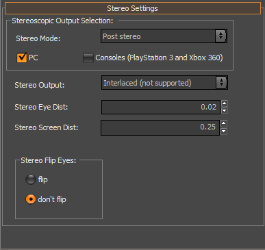

Overview
Ideally we would like to change nothing in order to ship CryENGINE 3 games in S3D. 99% of the time this will be the case, but below are some items that must change, and things that should be considered whenever making any new project.
The vast majority of these settings have recently been exposed to designers an artist through an interface in the CryENGINE 3 Sandbox.
It can be found under the display tab at the bottom in the sandbox rollup bar.

Stereo Rendering Methods (Stereo Mode)
- Dual Rendering
The scene is rendered twice for the left and right eye, using an asymmetric frustum (off-center projection). This is the preferred mode for PC and when quality is more important than performance
Status: Fully implemented. - Post Stereo/ SSRS (Screen Space Re-Projection Stereo)
The image for the second eye is extracted from the first eye by offsetting pixels based on the depth. This is the only mode affordable on consoles.
Status: Fully implemented.
Stereo Output
| Device | Description | Status |
|---|---|---|
| Generic Dualhead | The left and right eye images are output to the two monitor ports of the graphics card. This mode works with expensive projectors. | Implemented; tested with several projectors (including public presentation at Siggraph 09). |
| iZ3D | Uses dualhead device with a special shader to condition images for the two iZ3D panels layered on top of each other. | Implemented and working. An improved combination algorithm (shader code) is available from iZ3D that is not yet integrated. |
| HDMI 1.4 | Standard for stereo on PS3. The framebuffer needs to have twice the height plus a 30 pixel gap between the top and bottom image. | |
| Side-by-Side | Uses double-width framebuffer where the right eye image is in the second half. Required mainly for stereo on 360. | Implemented and working |
| Interlaced | One line of the left eye is followed by on line of the right eye image. Required mainly for stereo on 360 and for Sandbox Stereo Preview. | Implemented and working |
| Emulation Mode | Update left and right eye RTs (so that they can be viewed with r_ShowRenderTarget) without outputting actual stereo. Important for debugging. | |
| Anaglyph | Anaglyph mode for debugging and production if no stereo hardware is available. | Implemented and working |
Combining Rendering Methods with Output Modes
Ideally all methods would work with all output devices. However, a naive implementation creates quite a large amount of permutations that need to be maintained. A different approach is to split the stereo image generation from the actual output conditioning. This will sacrifice some performance and memory in some cases, especially on consoles. (images need to be copied to left and right buffers first, although they could be written directly to the framebuffer). The best approach is to deliberately limit the possible combinations (e.g. no dual rendering at all on consoles).
The Future for Stereo Experience Improvements
- Experiment with automatic adaption of convergence for close objects, similar to DOF.
- Experiment with limiting parallax.
- Check more tricks from the Sony GDC presentation.
Defining the variables for the CryENGINE3 Renderer
| Variable | Description | Parameters | Default Value | Additional Description |
|---|---|---|---|---|
| r_StereoMode | Sets stereo rendering mode. | "0": Off "1": Dual rendering "2": Post Stereo | 0 | |
| r_StereoOutput | Sets stereo output. Output depends on the stereo monitor | "0": No stereo output (emulation mode) "1": Generic Dual Head "2": IZ3D "3": Above and Below (not supported) "4": Side by Side "5": Interlaced "6": Anaglyph | 0 | |
| r_StereoDevice | Sets the stereo device (Only possible before App Start) | "0": No stereo support "1": Frame compatible formats (side by side, interlaced, anaglyphic) "2": HDMI 1.4 (PS3 only) "3": Stereo driver (PC only Nvidia or AMD) "4": Dualhead (PC only, two projectors or iZ3D) "100": Auto-detect device for platform | 1 | |
| r_StereoEyeDist | Distance between eyes used for stereo (interocular distance) | - | 0.02 | |
| r_StereoScreenDist | Distance to plane where stereo parallax converges to zero | - | 0.25 | |
| r_PostStereo | Enables post process stereo view. | - | 0 | |
| g_StereoFrameworkEnable | Enables a stereo debugging feature | "1" Normal mode "2" Debug enabled | 1 | |
| g_StereoIronsightEyeDistance | When a weapon is in ironsight mode, adjusts the r_StereoEyeDist | - | 0.0064 | |
| g_StereoIronsightWeaponDistance | When a weapon is in ironsight mode, adjusts the r_StereoScreenDist | - | 0.375 | |
| r_StereoGammaAdjustment | Additional adjustment to the graphics card gamma correction when stereo is enabled | "0":Off | 0.12 | |
| r_StereoHudScreenDist | Controls the depth where the HUD sits in the display | - | 0.5 | |
| r_StereoNearGeoScale | Scale for near geometry (weapon) that gets pushed into the screen | - | 0.65 | |
| r_ShowRenderTarget | Displays special render targets - for debug purpose | The descirption is too long, check in editor or look into Render.cpp | 0 | Set to 26 for Stereo left and right buffers |
| capture_misc_render_buffer | Captures internal render targets. | 0: Disable (default) 1: Capture HDR, depth, shadow mask and AO buffers along with final framebuffer 2: Capture stereo left and right buffers | 0 | Enable capturing via "capture_frames 1" |